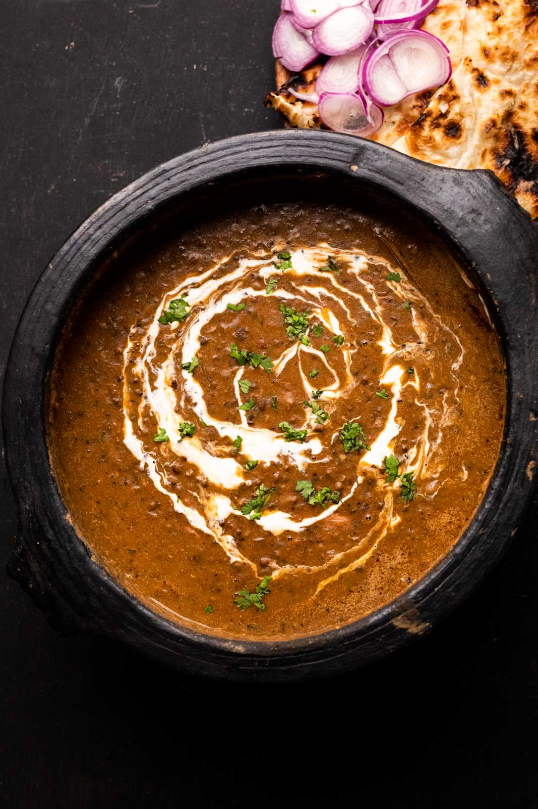
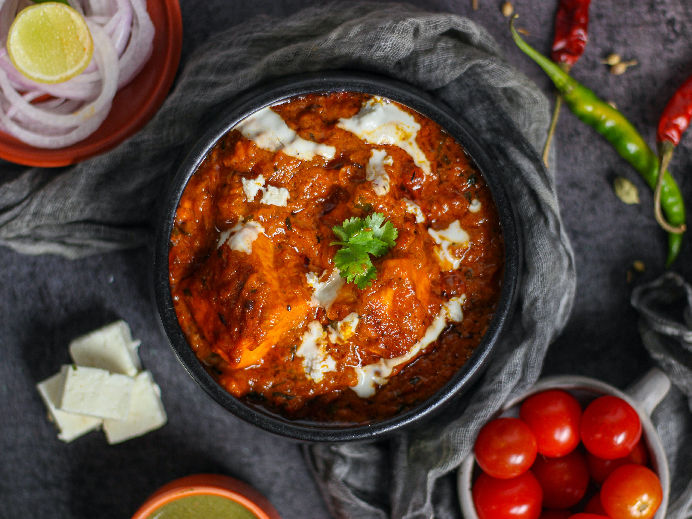

Chole Bhature also known as Chana Bhatura is one of the most popular Punjabi dish
liked almost all over India. Chole stands for a spiced tangy chickpea curry and Bhatura is a soft and
fluffy fried leavened bread. Chola Bhatura always make for a delicious and filling meal. In this recipe
post, I have included the step-by-step pictorial of making both the chana curry as well as a quick
bhatura that is made without yeast.

This Dal Makhani recipe is a restaurant style version with subtle smoky flavors and creaminess of the
lentils. If you love authentic Punjabi food then you are going to love this Dal Makhani even more. Dal
Makhani is one of the most popular lentil recipes from the North Indian Punjabi cuisine made with Whole
Black Lentils (known as Urad dal or Kaali Dal in Hindi) and Kidney Beans (known as Rajma in Hindi).
Want a meal that’s hearty, satisfying and delightful too? Here’s it – mashed spiced
vegetables; served with
a side of cotton-like soft, buttery dinner rolls, crunchy onions, herby fresh coriander and tangy lemon.
To
sum up, the Pav Bhaji – a famous street food from the ‘city of dreams,’ Mumbai. This Pav Bhaji Recipe is
going to be create fireworks on your palate!
Flaky and crunchy fried Samosas are one of the most popular street food snack in North Indian cuisine.
They
feature a pastry-like crust but are filled with savory and spiced potato and green peas for a hearty,
delicious snack. This step-by-step recipe guide will help you to make the flakiest, tastiest, absolutely
best Punjabi Samosa or Aloo Samosa from scratch!
This Shahi Paneer is deliciously rich and creamy, making it one of the most popular
recipes in Mughlai
cuisine. Fresh, unmelting cheese is married with a creamy gravy, perfect for serving with naan or roti.
“Shahi” means “royalty,” and I can promise this dish is fit for a King! What are you waiting for? This
delicious dish that is fit for royalty can be on your table tonight. Go ahead and treat yourself!
